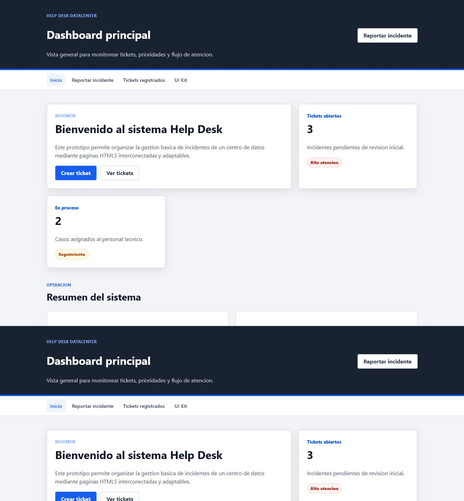
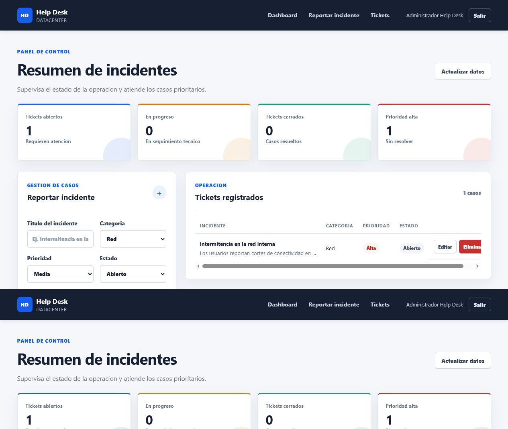
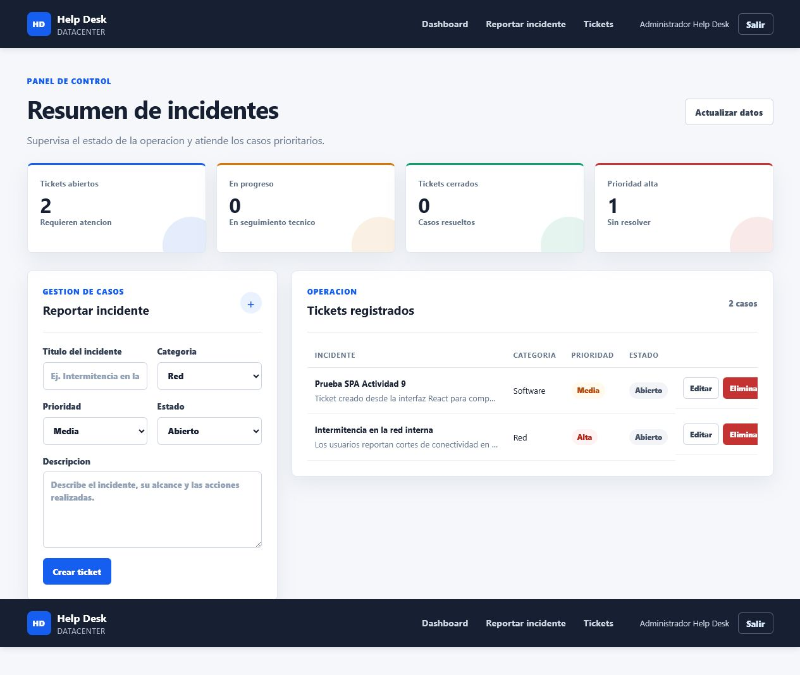

Desarrollo de Sistemas Informaticos
Implementacion de una Single Page Application para el Sistema de Gestion de Incidentes Help Desk Datacenter.
Se construyo un frontend dinamico basado en React para consumir la API REST del Help Desk. La SPA permite autenticarse, consultar los incidentes almacenados en PostgreSQL, registrar nuevos tickets, editar sus datos y eliminar registros.
Navigation con enlaces internos y cierre de sesion.Dashboard con indicadores de tickets abiertos, en progreso, cerrados y prioridad alta.TicketForm para crear y actualizar incidentes.TicketList con tabla responsive, estados y acciones.src/api.js centraliza peticiones, token Bearer y errores.La aplicacion usa peticiones HTTP asincronas a /auth/login y a las rutas protegidas de /tickets. React escapa el contenido textual de los tickets antes de renderizarlo, evitando insertar variables como HTML ejecutable. El backend valida los campos, usa consultas parametrizadas, JWT, Helmet y CORS configurable.
Las siguientes capturas documentan la estructura HTML, el UI Kit y el layout responsive desarrollados previamente.

La evidencia responsive completa de móvil y tablet permanece disponible en la carpeta Capturas/ del repositorio; en este informe se priorizan las capturas legibles de la integración final.


Backend: entrar a backend/, ejecutar npm install, configurar .env, ejecutar npm run seed y levantar con npm run dev. Frontend: entrar a frontend-spa/, ejecutar npm install y npm run dev.
El frontend se publico en Vercel con VITE_API_URL=https://helpdesk-datacenter-7sv8.onrender.com. El backend Node.js/Express se publico en Render y se conecto mediante SSL a PostgreSQL Neon. CORS quedo restringido al dominio publico de Vercel.
https://helpdesk-frontend-ashy-rho.vercel.app, backend https://helpdesk-datacenter-7sv8.onrender.com y proyecto Neon aged-star-58712964.La fase frontend queda implementada como SPA modular, responsive y conectada a la API REST existente. La separacion de componentes facilita mantenimiento y futuras ampliaciones, mientras que la configuracion por variables permite migrar de localhost a servicios cloud sin cambiar el codigo de negocio.